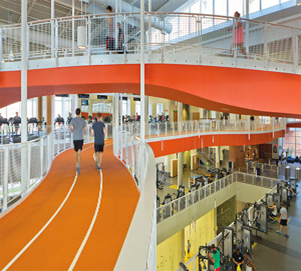

Recreation centers for kids are free! These are centers in every borough with basketball courts, libraries, game rooms, dance studios, and fun activities that kids will love. They also offer facilities such as indoor pools, weight rooms, and art studios. All recreation centers offer a range of programs for people of all ages.
To get a full list of the recreation centers in your town head over to www.nycgoveparks.org for more details.
